白天
村子還是村子
用昨晚撿到的糖霜換裝備、學技能，決定今晚帶哪兩個上場。一天只有這麼多資源，選了這個就沒有那個。
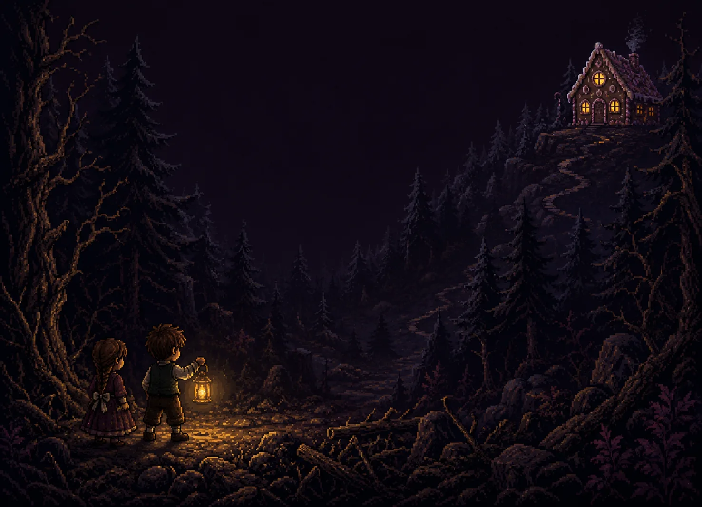
成功大學 Python 課程專題
這一次，換他來保護妹妹。
兄妹倆從女巫的屋子回來了，帶著一整袋糖。
村子餓了一整個冬天，而現在他們手上有東西。
七個夜晚之後，來敲門的已經不是人了。
白天
用昨晚撿到的糖霜換裝備、學技能，決定今晚帶哪兩個上場。一天只有這麼多資源，選了這個就沒有那個。
夜晚
守住葛蕾特 50 秒。她不會跑、不會躲，被碰到就掉血 —— 而她的血，天亮也不會自己補回來。
天亮
六項評分、一個等第、一到三顆星。打得不好可以重來，重來的成績只會往上不會往下。
下面三段都是遊戲實際跑出來的畫面，沒有剪接。
每一夜換一張地圖、換一批怪；從第二夜起，每一夜有一隻頭目。
第 1 夜 回來的那天
你們帶著女巫屋子裡的東西回到村子。
村民熱烈迎接。有人好奇，有人議論。
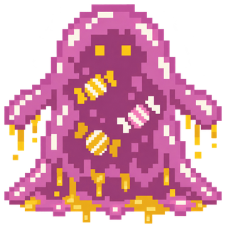
第 2 夜 他們靠得更近
磨坊今天沒有轉。
血 46 弱點 雷
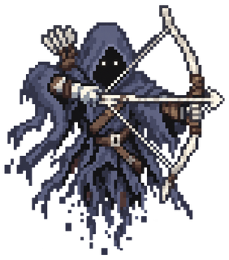
第 3 夜 不只是森林裡
你在林邊認出了三張臉——都是白天跟你借過火的人。
血 52 弱點 光
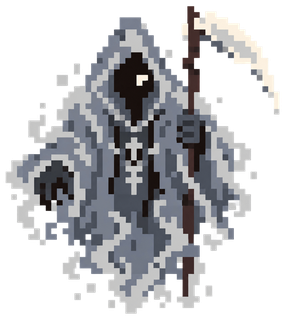
第 4 夜 霧裡的那張臉
市集空了。攤子還在，人不在。
血 58 弱點 風
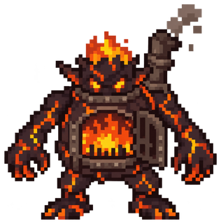
第 5 夜 教堂燒起來了
有人先點的火。沒有人承認。
血 46 弱點 水
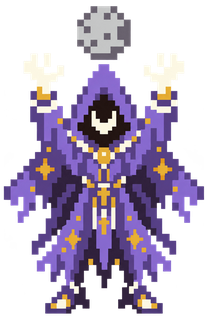
第 6 夜 分不清在逃還是在追
村子燒了一整夜。
血 70 弱點 水
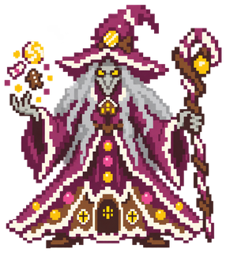
第 7 夜 回到被丟掉的地方
這條路你走過一次——那次是被人帶進來的。
血 92 弱點 沒有單一解答
雷破甲、光揭穿、風開路、水滅火。 帶錯元素打得動，帶對元素打得快 —— 而有一隻頭目，不帶水就真的碰不到它。
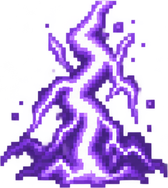
雷 冷卻 20 秒 瞬間
大範圍劈下閃電：護甲全碎、吃三點傷害，活下來的只剩一滴血；落點留下一片電焦的地面，走進去的只剩三成速度
光 冷卻 22 秒 持續 8 秒
八秒內照亮全場，隱形的現形，全場敵人畏光減速三成，周圍的敵人每秒被灼燒
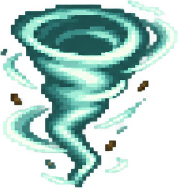
風 冷卻 16 秒 持續 5 秒
朝面對的方向放出三道呈扇形散開的龍捲風，捲起沿路的怪一起帶走
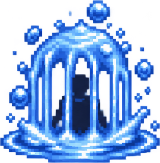
水 冷卻 18 秒 持續 5 秒
罩住腳下一片地方，裡面的敵人動不了；五秒後炸開，全部清空
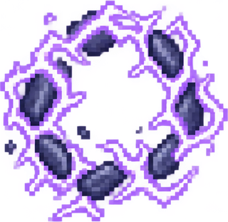
雷 冷卻 26 秒 持續 5 秒
披上雷電護甲五秒，碰到你的人當場被電死；五秒結束時把累積的電一次放掉，大範圍清空
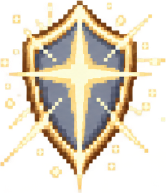
光 冷卻 30 秒 持續 8 秒
八秒內在葛蕾特身上罩一層護罩，任何東西都碰不到她，撞上去的還會被彈開；期間每四秒替兄妹各回一滴血
風 冷卻 24 秒 持續 6 秒
六秒內化成旋風，撞到的敵人會被捲著往你衝的方向飛到場邊；期間照樣可以揮燈
水 冷卻 28 秒 瞬間
三圈水波由內往外推開，掃過的全部清空；之後全場起霧，敵人走得更慢
12 種怪，每一種都有一個「這樣做就對了」的答案。 遊戲裡的圖鑑會直接告訴你那個答案 —— 難的從來不是知道，是做到。
血 2 速 38
血 5 速 29
剋星：打不退，只能繞開或用旋風捲走
血 1 速 73
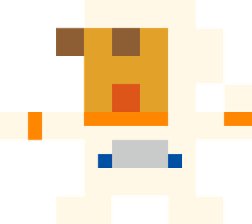
血 4 速 16
剋星：聖光 照著的時候正面也打得進去
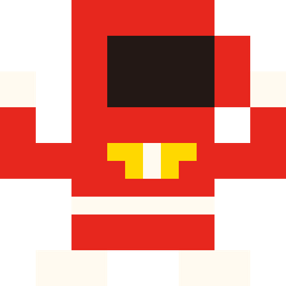
血 2 速 30
剋星：走過去打斷它蓄力
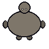
血 3 速 26
剋星：走過去打斷它蓄力
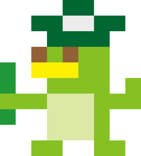
血 3 速 34
剋星：任何清場技 小的會補在原地，別在她旁邊打
血 1 速 44
血 2 速 46
剋星：聖光 不只現形，會被定在原地
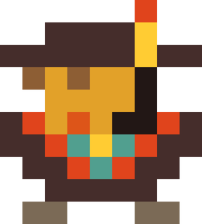
血 3 速 25
剋星：閃電 護甲會被劈碎
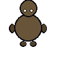
血 3 速 28
剋星：泥巴清不掉，只能繞
血 2 速 52
剋星：水牢／怒潮 火藥泡濕就炸不了
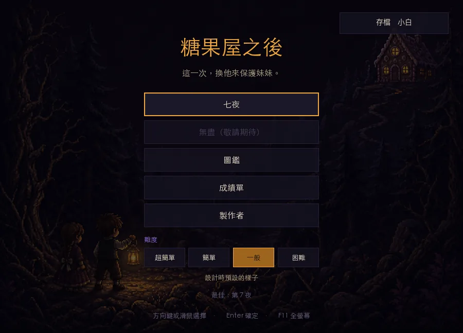
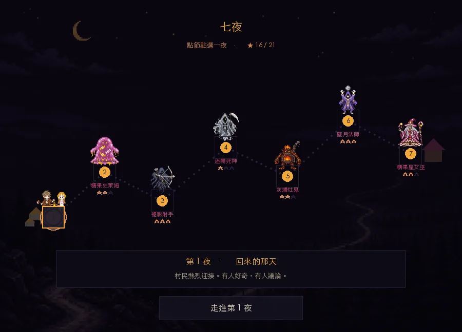
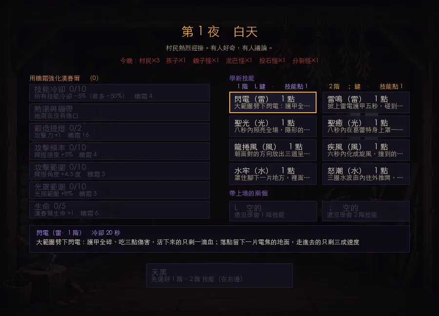
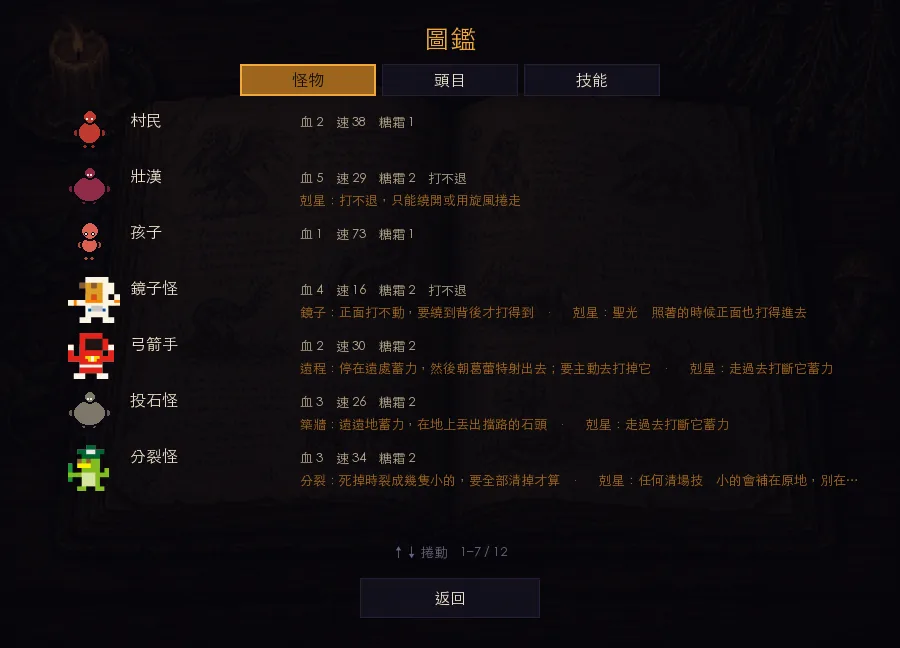
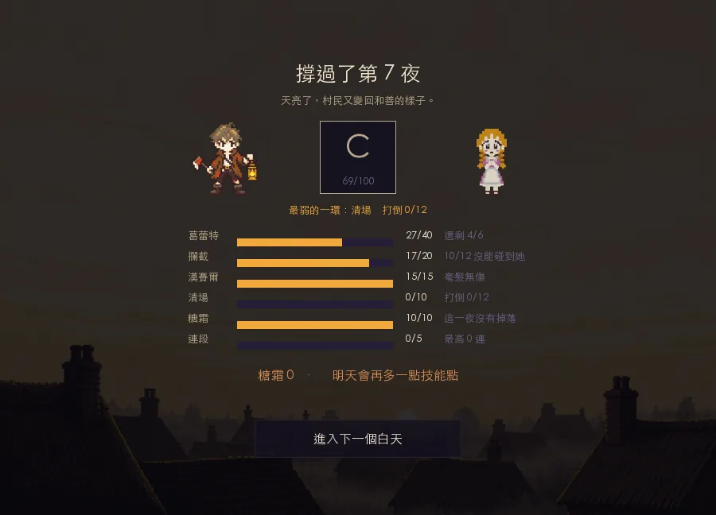
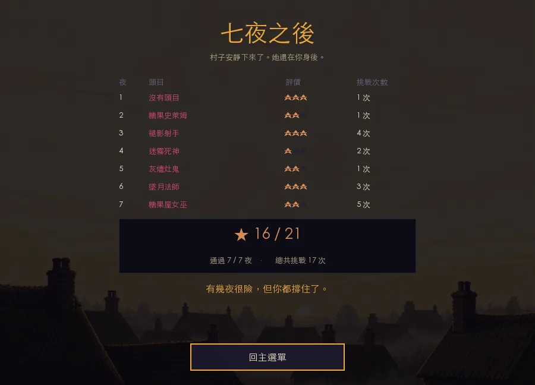
需要 Python 3.11 以上。
python3.11 -m venv .venv
.venv/bin/python -m pip install -e ".[test,display]"
.venv/bin/python -m gingerbread兩個人在森林裡，一個提著燈。